Давай начнём с установки Unity. Для начала нам нужно перейти на сайт unity.com и создать свой "Unity ID"
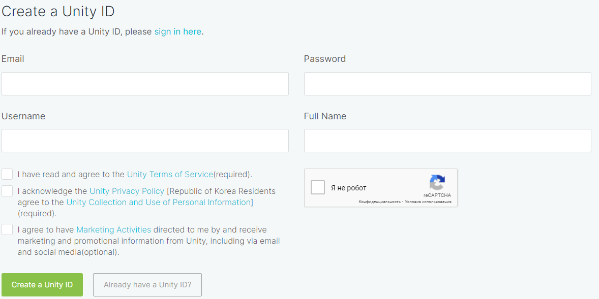
После того, как ты зарегистрировался, переходи по ссылке для скачивания движка и нажимай "Download for Windows"
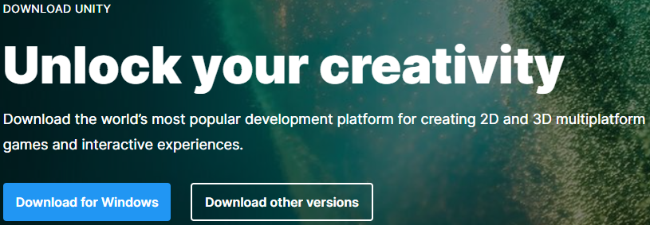
На этапе выбора компонентов для скачивания рекомендую выбрать пункты: Unity, Documentation, Standart Assets, Microsoft Visual Studio Tools и платформы, на которых будут работать ваши игры (Компьютер - Windows, Mac; Браузер - WebGL; Смартфон - Android) Затем выбираем папку установки, ждём и открываем Unity Hub
Нас встречает такое окно, в котором мы входим в свой аккаунт и создаём новый 3D проект
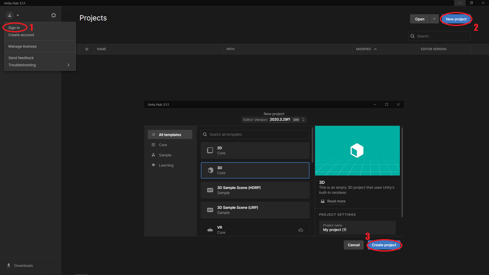
Вот, что ты должен увидеть при запуске своего проекта. Так выглядит интерфейс Unity. Давай я расскажу тебе про него поподробнее. В центре находится Сцена. Ты можешь вращать колёcико мыши, чтобы приближать и отдалять камеру, или держать его, чтобы перемещаться. Слева расположена Иерархия, которая отображает все объекты, которые находятся на Сцене. Сейчас на ней должно располагаться 2 объекта: Камера и Свет. И если ты нажмёшь на один из них, то Инспектор покажет все характеристики этого объекта, которые называются Компонентами. Снизу расположена Панель Проекта, в которой будут располагаться Игровые Ассеты, которые можно будет легко перетащить на Сцену и тем самым добавить в Иерархию
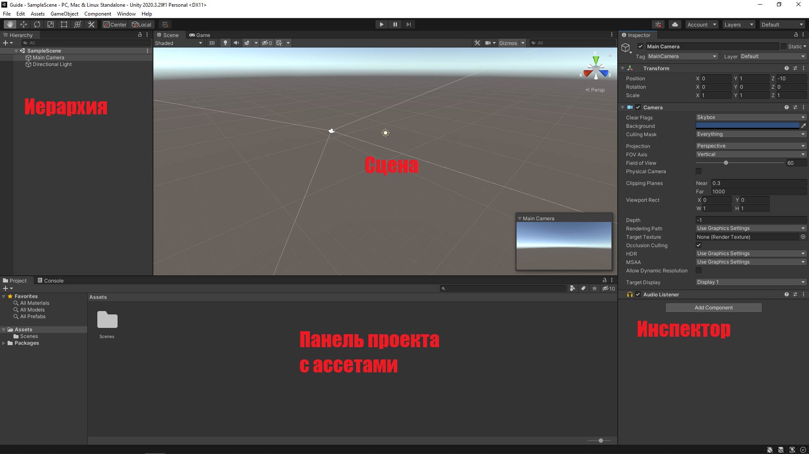
А теперь давай приступим к созданию нашей игры. Для начала нам нужно создать поверхность, на которой будет находиться игрок. Для этого правой кнопкой мыши нажми на Иерархию и выбери 3D Object->Cube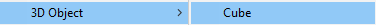
На твоей Сцене появился куб. Ты можешь осмотреть его со всех сторон используя колёсико мыши. Чтобы сбросить его позицию, нужно перейти в Иерархию->Transform нажать пкм и выбрать Reset.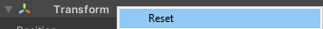
Он будет неким подобием дороги, но, чтобы он стал на неё похож, нужно его удлинить. Для этого в Иерархии нужно выбрать компонент Scale и задать ему значения: X = 15; Y = 1; Z = 10000; А также назвать его Ground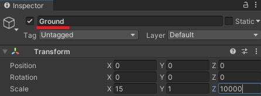
Чтобы наша дорога начиналась примерно в том же месте, где стоит камера, нам нужно назначить её Координату по оси Z = 4990 (Position). Затем нам нужно создать ещё один 3D Объект тем же способом, что и дорогу, сбросить его координаты, нажав на Reset и поднять его за зелёную стрелку, чтобы он оказался над дорогой. Этот кубик будет нашим игроком, поэтому давай назовём его Player и перекрасим его в другой цвет. Для этого нам нужно добавить материал для нашего игрока в Панели проекта щелчком пкм и выбором Create->Material. Теперь мы можем изменить характеристики этого материала, например назначить ему цвет. После этого этот материал нужно перенести на нашего игрока, чтобы он изменил свой цвет
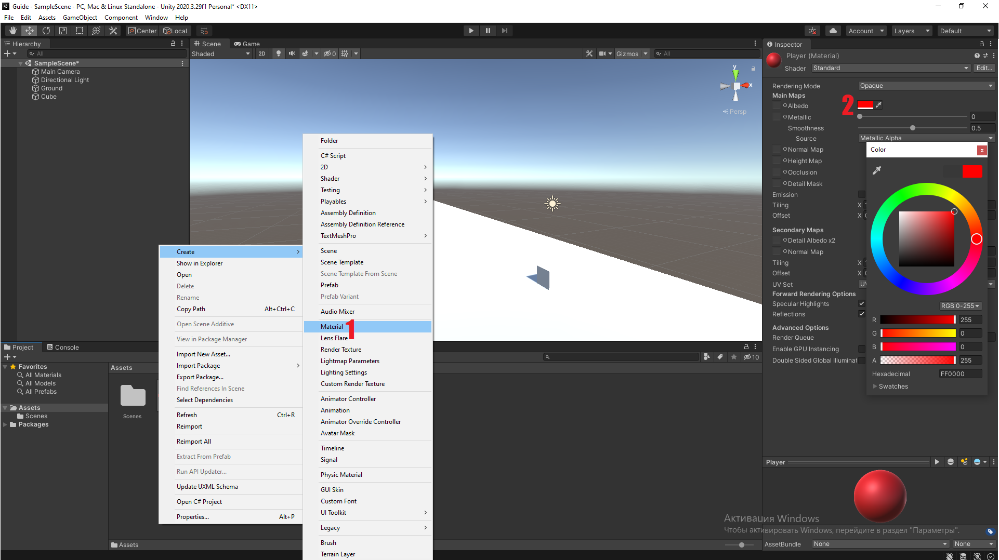
Мне кажется, что наша камера находится слишком далеко от нашего кубика, поэтому перетащи её чуть ближе и повыше, используя стрелки и регулируя её положение в окне Game, чуть правее от сцены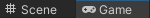
Теперь, если мы запустим нашу игру на клавишу Play сверху от Сцены, то ничего интересного не произойдёт, потому что в нашей игре ещё нет никакого кода. Но перед этим нам нужно добавить в нашу игру Физику. Для этого нужно выйти из игрового режима и добавить новый компонент нашему игроку в Инспекторе, а именно Rigidbody(Твёрдое тело)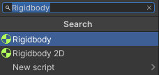
Если теперь мы запустим игру, то увидим, что наш куб упадёт на землю. Когда ты убедился, что гравитация работает, то задай координату по Y у нашего кубика, равную 1. Последней задачей этого урока будет изменения Скайбокса. Чтобы сделать это нам нужно выбрать нашу камеру (Main Camera), изменить значение Clear Flags на Solid Color и выбрать его цвет
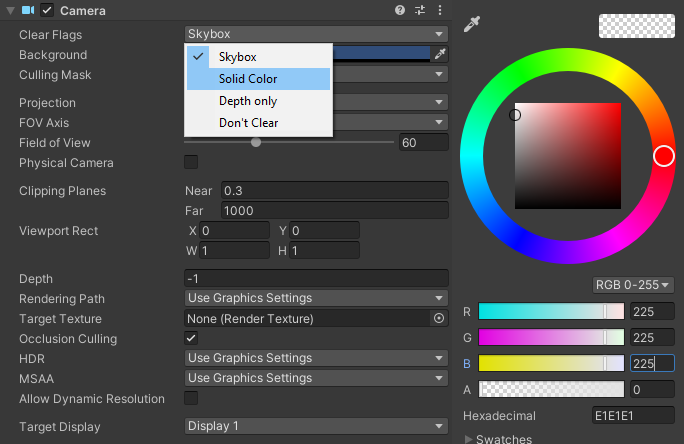
Наконец можно сохранить нашу игру сочетанием клавиш "Ctrl"+"S" и переходить ко второму уроку